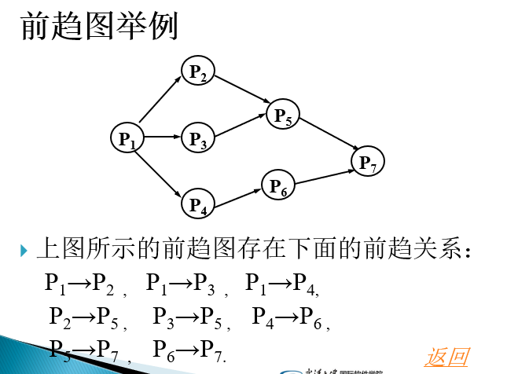
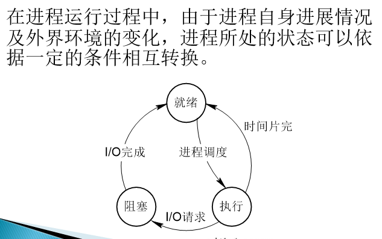
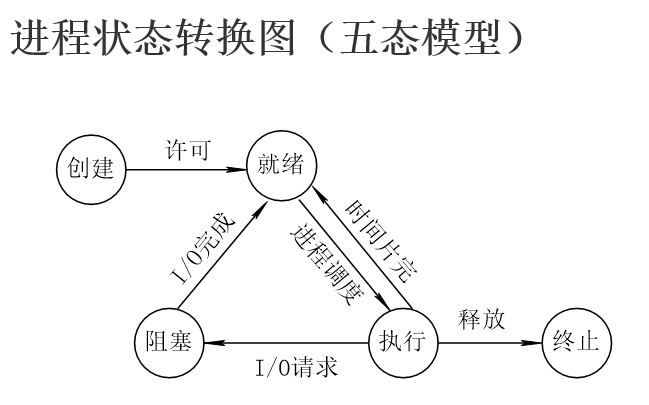

处理机管理是操作系统的基本功能之一。
处理机管理的基本任务是对处理机的分配和运行实施有效的管理。
进程是处理机分配和运行的基本单位。因此，处理机管理可以归结为对进程的管理。
2.1 进程的基本概念
程序执行的两种方式：
引入进程是为了使多道程序并发执行。
- 顺序执行：单道批处理系统的执行方式。
- 并发执行：目的是为了提高资源利用率。
2.1.1 程序的顺序执行
顺序执行过程：一个程序由若干程序段组成，按照某种先后次序来执行，仅当前一个操作执行完后才能执行后继操作。
特征：
- 顺序性：处理机的操作严格按照程序所规定的顺序执行，即每一个操作必须在下一个操作开始之前结束。
- 封闭性：程序一旦开始运行，其执行结果不受外界因素影响。
- 可再现性：只要程序执行时的初始条件和执行环境相同，当程序重复执行时，都将获得相同的结果。
2.2.1 前趋图
前驱图是一个有向无循环图，每个结点表示一条语句、一个程序段或进程，结点间的有向边表示语句或程序段的执行次序。

2.1.3 程序的并发执行
程序的并发执行是指若干个程序（或程序段）同时在系统中运行，这些程序（或程序段）的执行在时间上是重叠的。
所谓执行在时间上是重叠的，是指执行一个程序（或程序段）的第一条指令是在执行另一个程序（或程序段）的最后一条指令完成之前开始。
特征：
- 间断性：并发程序具有“执行—暂停—-执行”这种间断性的活动规律。
- 失去封闭性：多个程序共享系统中的资源，这些资源的状态将由多个程序来改变，致使程序之间相互影响。
- 不可再现性：在初始条件相同的情况下，程序的执行结果依赖于执行的次序。
2.1.4 进程的特征与状态
1. 进程的特征和定义
- 结构性：进程实体由程序段、数据段及进程控制块组成，又称为进程映像。
- 动态性：进程是程序的一次执行过程。动态性还表现为它因创建而产生，因调度而执行，因无资源而暂停，因撤消而消亡。而程序是静态实体。
- 并发性：多个进程实体同时存在于内存中，能在一段时间内同时运行。
- 独立性：在传统OS中，进程是独立运行的基本单位，也是系统分配资源和调度的基本单位。
- 异步性：也叫制约性，进程之间相互制约，进程以各自独立的不可预知的速度向前推进。
进程的定义： 进程是进程实体的运行过程，是系统进行资源分配和调度的一个独立单位。
2. 进程的三种基本状态
- 就绪状态：进程已获得除处理机以外的所有资源，一旦分配了处理机就可以立即执行，此时进程所处的状态为就绪状态。
- 执行状态：又称运行状态。当一个进程获得必要的资源并正在处理机上执行，此时进程所处的状态为运行状态。
- 阻塞状态：又称等待状态、睡眠状态。正在执行的进程，由于发生某事件而暂时无法执行下去（如等待输入/输出完成），此时进程所处的状态为等待状态。
进程状态转换图（三态模型）

进程状态转换
- 就绪→执行
- 进程调度程序将处理机分配给处于就绪状态中的某进程后，进程状态由就绪状态转为执行状态。
- 执行→就绪
- 当前进程因时间片用完而被暂停执行时，进程状态由执行状态转为就绪状态。
- 在优先级调度方式中，一个优先级高的进程就绪后，可抢占一个正在执行的优先级低的进程的处理机，此时该低优先级的进程将由执行状态转为就绪状态。
- 执行→阻塞
- 当前进程因发生某事件而无法执行时，进程状态由执行状态转为阻塞状态。如：等待使用资源；等待外设传输；等待人工干预。
- 阻塞→就绪
- 处于阻塞状态的进程，当所等待的事件发生时，便由阻塞状态转为就绪状态。如：资源得到满足；外设传输结束；人工干预完成。
3. 进程的挂起
由于进程的不断创建，系统的资源已经不能满足进程运行的要求，这个时候就必须把某些进程对换到外存，暂时不参与进程调度，起到平滑系统操作负荷的目的。称为进程挂起（suspend）。
进程挂起的原因：
- 终端用户的请求：用户要求挂起自己的进程，以根据中间执行情况和中间结果进行某些调试、检查和改正。
- 父进程的请求：父进程希望挂起子进程检查。
- 负荷调节的需要：系统资源不足，负荷过重，已影响到实时任务的控制，此时需要挂起部分进程以保证系统正常运行。
- 操作系统要求：当系统出现故障或某些功能受到破坏时，需要挂起某些问题进程以排除故障。
挂起状态：
基于上述原因，需引入挂起状态。包括：
- 静止就绪（就绪挂起）
- 静止阻塞（阻塞挂起）
并且增加挂起状态（又称为静止状态）到非挂起状态（又称为活动状态）的转换。

状态转换：
- 活动就绪→静止就绪：
- 操作系统根据当前资源状况和性能要求，也可以决定把内存中就绪态进程对换出去成为静止就绪态。
- 活动阻塞→静止阻塞：
- 操作系统根据当前资源状况和性能要求，也可以决定把内存中阻塞态进程将被对换出去成为静止阻塞态。
- 静止就绪→活动就绪：
- 当内存中没有就绪态进程，或者静止就绪态进程具有比活动就绪态进程更高的优先级，系统将把静止就绪态进程转换成活动就绪态。
- 静止阻塞→活动阻塞：
- 当内存有较多空闲空间，并且静止阻塞的进程所等待的事情很快就会发生时，可以将它调入内存。
- 执行→静止就绪：
- 当一个具有较高优先级的等待挂起态进程的等待事件结束后，它需要抢占了CPU，而此时主存空间又不够，从而可能导致正在运行的进程转化为静止就绪态。另外处于执行态的进程也可以自己挂起自己。
- 静止阻塞→静止就绪：
- 引起进程等待的事件发生之后，相应的静止阻塞态进程将转换为静止就绪态。
挂起进程的特征:
- 该进程不能立即被执行；
- 挂起进程可能会等待一个事件，但所等待的事件是独立于挂起条件的，事件结束并不能导致进程具备执行条件；
- 进程进入挂起状态是由于操作系统、父进程或进程本身阻止它的运行；
- 结束进程挂起状态的命令只能通过操作系统或父进程发出。
4. 创建状态和终止状态
创建状态：进程刚刚建立，获得了进程控制块，但是相应资源还未分配，进程自身还未进入主存，即创建工作尚未完成。
终止状态：当一个进程正常或异常结束，操作系统已释放它所占用的资源，但尚未将它撤消时的状态，又称退出状态。


状态转换：
- NULL→创建：一个新进程产生时，该进程处于创建状态。
- 创建→活动就绪：就绪队列能够接纳新的进程时，OS按一定调度方式将处于新建状态的进程转换成就绪状态。
- 创建→静止就绪：考虑到系统当前资源状况和性能要求，可以决定新建的进程将被对换出去成为静止就绪态。
- 执行→终止：当前进程已经正常完成或发生某事件（产生异常），进程状态由执行状态转为终止状态。
2.1.5 进程控制块
进程控制块（PCB，Process Control Block）：
是操作系统维护的，用于描述和管理进程的数据结构。它是进程实体的一部分，操作系统通过PCB感知进程的存在，PCB是进程存在的唯一标志。
进程和PCB是一一对应的。
PCB中的信息：
- 进程标识信息
- 处理机状态信息
- 进程调度和状态信息
- 进程控制信息
1. 进程标识信息
进程标识信息用于标识一个进程。包括：
- 进程标识符：唯一标识进程的整数。
- 进程名：通常为可执行文件名。（不唯一）
- 用户标识符：指示进程所属的用户。
- 父进程标识符和子进程标识符：描述进程家族关系。
2. 处理机状态信息
处理机状态信息用于保存现场，由处理机各寄存器组成。包括：
- 通用寄存器：处理机执行时可以访问的寄存器。
- 指令计数器：存放将要访问的下一条指令地址。
- 程序状态字：含执行结果状态、中断屏蔽码等。
- 栈指针：每进程有多个与之相关的栈，用于保存过程和系统调用的地址和参数。
3. 进程调度和状态信息
进程调度和状态信息用于存放与进程调度及对换有关的信息。包括：
- 进程状态：指明进程当前状态。
- 进程优先级：描述进程使用处理机的优先级别。
- 进程调度的其他信息：取决于进程调度算法，如进程等待时间总和、进程运行时间总和等。
- 等待事件：进程处于等待状态的原因。
4. 进程控制信息
进程控制信息：包括：
- 程序和数据地址：指出进程的程序及数据在内存的地址。
- 进程同步及通讯机制：如信号量、消息队列等。
- 资源清单：记录进程所需的资源和已分配资源。
- 链接指针：处于同一状态的进程组成一个队列，链接指针指向队首。
PCB的组织方式
- 链接方式：把处于同一状态（例如就绪态）的所有进程控制块链接在一起，这样的数据结构称为进程队列（Process Queues），简称队列。
- 索引方式：系统根据进程状态建立几张索引表，登记具有相应状态的PCB地址。


2.2 进程控制
进程控制的职能是对系统中的所有进程实施有效的管理。
常见的进程控制功能有进程创建、撤消、以及完成各种状态间的转换等。这些功能一般由操作系统内核来实现。
原语
原语是由若干条机器指令构成的，用以完成特定功能的一段程序，这段程序在执行期间不可分割（要么全部完成，要么全都不做）。
引进原语的主要目的是为了实现进程的控制、同步和通信。用于进程控制的原语有：创建原语、撤销原语、阻塞原语和唤醒原语等。
进程图
进程图（Process Graph）又称进程树或进程家族树，是描述进程家族关系的一棵有向树。图中的结点表示进程，若进程A创建了进程B，则从结点A有一条边指向结点B，说明进程A是进程B的父进程，进程B是进程A的子进程。

2.2.1 进程创建
引起进程创建的事件：
- 用户登录：用户登录后，若合法则为用户创建一个进程。
- 作业调度：为调度到的作业分配资源并创建进程。
- OS服务：创建服务进程。
- 应用需要：应用程序根据需要创建子进程。
创建原语：
进程创建原语的主要功能是为被创建进程建立一个PCB。其算法思想如下：
- 向系统申请一个空闲PCB结构，若没有则出错返回；
- 为新进程分配资源：为新进程的程序和数据以及用户栈分配必要的内存空间；
- 初始化新进程的PCB：填写进程名、标识符、状态、程序地址等；
- 将进程PCB插入相应队列：插入就绪队列。
2.2.2 进程终止
引起进程终止的事件：
- 正常结束
- 异常结束：超时、内存不足、地址越界、算术错、I/O故障、非法指令等。
- 外界干预：因某种原因需要操作员或系统终止进程；父进程请求终止子进程；父进程终止。
终止原语：
进程终止原语的主要功能是撤消一个进程。其算法思想如下：
- 根据标识符，找到进程的PCB，读出其状态；
- 若被终止进程正处于运行状态，则立即停止该进程的执行，设置重新调度标志；
- 若被终止进程有子孙进程，还应将该进程的子孙进程予以终止；
- 对于被终止进程所占有的资源，或者归还给父进程，或者归还给系统；
- 最后撤消它的PCB。若需要转调度程序。
2.2.3 进程阻塞与唤醒
引起进程阻塞的事件：
- 请求系统服务：如请求分配资源但尚无资源分配。
- 启动某种操作：进程必须在该操作完成之后才能继续执行
- 新数据尚未到达：如合作进程之间。
- 无新工作可做：进程已完成了给定任务，新任务未到。
阻塞原语：
阻塞原语的主要功能是将进程由执行状态转为阻塞状态。其算法思想如下：
- 根据当前执行进程的标识符找到PCB；
- 停止执行进程，将进程状态改为阻塞；
- 保存该进程的现场信息到其PCB结构中；
- 将该进程PCB插入到等待队列；
- 转进程调度程序。
唤醒原语：
唤醒原语的主要功能是将进程唤醒，其算法思想如下：
- 从等待队列中取出相应进程；
- 将该进程状态改为就绪，并将进程插入就绪队列；
- 转进程调度或返回。
阻塞与唤醒的关系：
- 一个进程由执行状态转变为阻塞状态，是这个进程自己调用阻塞原语去完成的。
- 进程由阻塞状态转变为就绪状态，是另一个发现者进程调用唤醒原语实现的。
- 一般发现者进程与被唤醒进程是合作的并发进程。
2.2.4 进程挂起与激活
进程挂起
当出现了引起进程挂起的事件时，比如，用户进程请求将自己挂起，或父进程请求将自己的某个子进程挂起时，系统将利用挂起原语将指定进程挂起。
挂起原语
挂起原语的主要功能是将指定进程挂起。其算法思想如下：
- 根据被挂起进程的标识符，找到其PCB；
- 取该PCB的状态；
- 若为运行状态，则停止其执行，改为就绪挂起状态，转进程调度；
- 若为就绪状态，则改为就绪挂起状态；
- 若为等待状态，则改为等待挂起状态；
进程激活
当发生激活进程的事件时，如用户进程或父进程请求激活指定进程，若进程驻留在外存而内存已经有足够的空间，则系统可利用激活原语将外存上被挂起的进程换入内存。
激活原语
激活原语的主要功能是将指定进程激活。其算法思想如下：
- 将进程状态由挂起改为激活后的状态；
- 就绪挂起改为就绪；
- 等待挂起改为等待；
- 若需要则转进程调度 。
2.3 进程同步
2.3.1 进程同步的基本概念
进程同步的主要任务是使并发执行的进程之间能有效地共享资源和相互合作，从而使程序的执行具有可再现性。
两种形式的进程制约关系
相互协作关系（直接制约关系）
- 要保证相互合作的诸进程在执行次序上的协调。
资源共享关系（间接制约关系，竞争关系）
- 要保证诸进程互斥地访问临界资源。
临界资源与互斥
临界资源(Critical Resources, CR)：一段时间内仅允许一个进程使用的资源称为临界资源。
互斥：当一个进程正在访问某共享资源时，就不允许其他进程对其访问。
诸进程应采用互斥方式实现对临界资源的共享。
临界区
临界区(Critical Section, CS)：进程中访问临界资源的那段代码称为临界区，又称临界段。
同类临界区：所有与同一临界资源相关联的临界区。
解互斥问题应遵循的原则
- 空闲让进：若无进程处于临界区时，应允许一个进程进入临界区。
- 忙则等待：当已有进程进入临界区，其他进程必须等待。
- 有限等待：应保证要求进入临界区的进程在有限时间内进入临界区。
- 让权等待：当进程不能进入自己的临界区时，应释放处理机。
同步：多个相关进程在执行次序上的协调。
互斥与同步
互斥是解决进程间竞争关系的手段。
同步是解决进程间协作关系的手段。
互斥是一种特殊的进程同步，即逐次使用临界资源。
2.3.2 信号量机制
要实现进程间正确的协作，操作系统必须提供实现进程协作的措施和方法，称为同步机制。
信号量是一种卓有成效的进程同步机制。
信号量的类型
1. 整型信号量
最初Dijkstra把整型信号量定义为一个用于表示资源数目的整型量S，它与一般整型量不同，除初始化外，仅能通过两个标准的原子操作wait(S)和signal(S)来访问。
Wait(S)和signal(S)操作可描述为：
wait(S)： while S<=0 do no-op；
S:=S-1；
signal(S)： S:=S+1； - Wait操作意味着申请一个资源，signal操作意味着释放一个资源。
- Wait和signal操作也常被称为P操作和V操作。
- 缺点： wait操作中只要是信号量S≤0，就会不断地测试。因此，该机制并未遵循“让权等待”的准则，而是使进程处于“忙等”的状态。
2. 记录型信号量
记录型信号量机制则是一种不存在“忙等”现象的进程同步机制。
但在采取了“让权等待”的策略后，又会出现多个进程等待访问同一临界资源的情况。为此，在信号量机制中，除了需要一个用于代表资源数目的整型变量value外，还应增加一个进程链表指针L，用于链接上述的所有等待进程。
记录型信号量是一个记录型数据结构，包含信号量值和一个等待队列，其中信号量值是一个具有非负初值的整型变量，等待队列是一个初始状态为空的队列。
信号量定义：
type semaphore=record
value: integer； //信号量值
L: list of process； //等待队列
end 信号量说明 var S: semaphore ；
Wait操作
设S为一个信号量
procedure wait(S)
var S：semaphore；
begin
S.value:=S.value-1； //表示申请一个资源
if S.value<0 then block(S.L)；//没有空闲资源
end signal操作
procedure signal(S)
var S: semaphore；
begin
S.value:=S.value+1； //表示释放一个资源
if S.value<=0 then wakeup(S.L)；//表示有进程处于等待状态
end 信号量的物理含义：
信号量S.value必须置一次且只能置一次初值，初值不能为负数，通常表示空闲资源的数目。
- S.value>0表示有S. value个资源可用；
- S.value=0表示无资源可用；
- S.value<0则| S. value |表示S等待队列中的进程个数；
Wait(S)意味着请求一个资源，signal(S)意味着释放一个资源。
注意：
- 除信号量的初值外，信号量的值仅能由wait和signal操作改变。
- wait、signal操作在封锁中断的情况下执行，即一个进程在信号量上操作时，不会有别的进程同时修改该信号量。也就是说wait操作和signal操作是原语。
- 在一定条件下，wait操作可能阻塞执行进程，而signal操作可以唤醒其他进程。
3. AND型信号量集：
记录型信号量适用于进程之间共享一种临界资源的场合。
在很多应用中，一个进程需要先获得两种或多种共享资源后，才能执行其任务。AND型信号量集适合同时需要多种资源，且每种占用一个时的情况。
基本思想：
- 把进程在整个运行其间所要的临界资源，一次性全部分配给进程，待该进程使用完临界资源后再全部释放。
- 只要有一个资源未能分配给该进程，其他可以分配的资源，也不分配给他。亦即要么全部分配，要么一个也不分配，这样做可以消除由于部分分配而导致的进程死锁。
Swait(s1, s2,…, sn) if ( s1>=1 and … and sn>=1) then for i:= 1 to n do si:= si-1; endfor else 进程进入第一个遇到的满足si<1条件的si信号量队列等待， 同时将该进程的程序计数器地址回退，置为Swait操作处 endif
Ssignal(s1, s2,…, sn)
for i:=1 to n do
si:=si+1;
从所有si信号量等待队列中移出进程并置入就绪队列。
endfor
**4. 一般型信号量集**：
适合于同时需要多种资源，且每种占用的数目不同，且可分配的资源还存在临界值（该种资源数目少于临界值是不允许分配）时的处理。
基本思想：对AND型信号量集进行扩充，允许一次申请多个资源，而且在分配之前，测试某资源的数量是否大于临界值。Swait(s1,t1,d1;…,sn,tn,dn)
if (s1>=t1 and … and sn>=tn) then
for i:=1 to n do
si:=si-di;
endfor
else
进程进入第一个遇到的满足si<ti条件的si信号量队列等待，
同时将该进程的程序计数器地址回退，置为Swait操作处。
endif
Ssignal(s1,d1;…sn,dn)
for i:=1 to n do
si:=si+di;
从所有si信号量等待队列中移出进程并置入就绪队列。
endfor
#### 2.3.3 信号量的应用
1. 利用信号量实现互斥
- 为使多个进程能互斥地访问某临界资源，只须为临界资源设置一个互斥信号量mutex (MUTual Exclusion)，其初值为1；
- 在每个进程中将临界区代码置于wait(mutex)和signal(mutex)之间。

若2个进程共享一个临界资源，信号量的取值范围是：
- 没有进程使用临界资源：1
- 只有1个进程使用临界资源：0
- 1个进程使用临界资源，另一个进程等待使用临界资源：-1
2. 利用信号量实现前趋关系
- 前趋关系：并发执行的进程P1和P2，分别有代码S1和S2，要求S1在S2开始前完成。

Var a,b,c,d,e,f,g:semaphore:=0,0,0,0,0,0,0;
begin
parbegin
begin S1； signal(a)； signal(b)； end；
begin wait(a)； S2； signal(c)； signal(d)； end；
begin wait(b)； S3； signal(e)； end；
begin wait(c)； S4； signal(f)； end；
begin wait(d)； S5； signal(g)； end；
begin wait(e)； wait(f)； wait(g)； S6； end；
parend
end
#### 2.3.4 管程机制
定义：管程定义了一个数据结构和在该数据结构上能为并发进程所执行的一组操作，这组操作能同步进程和改变管程中的数据。
构成：
- 管程的*名字*
- 局部于管程的*共享数据结构（变量）*
- 对共享数据结构进行的*一组操作（函数）*
- 对局部于管程的数据*设置初始值的语句*

基本特征：
- 管程中的共享变量仅能由管程内定义的函数所访问，在管程外部是不可见的。
- 一个进程只有通过调用管程内的函数（进入管程）才能间接访问共享变量。
- 每次仅允许一个进程在管程内执行某个函数。即规定管程互斥进入。
- 由于管程是一个语言成分，所以管程的互斥访问完全由编译程序在编译时自动添加上，无需程序员关心，而且保证正确。

**入口等待队列**：
因为管程是互斥进入的，所以当一个进程试图进入一个巳被占用的管程时它应当在管程的入口处等待，因而在管程的入口处应当有一个进程等待队列，称作*入口等待队列。*
**条件变量**：
由于管程通常是用于管理资源的，因而在*管程内部*，应当存在某种等待机制。当进入管程的进程因资源被占用等原因不能继续运行时使其等待。为此在管程内部可以说明和使用一种特殊类型的变量——*条件变量。每个表示一种等待原因，对应一个等待队列（条件队列）。*
当一个进程通过调用管程的外部函数而进入管程之后，因为某种原因而无法运行时，就在相应的条件变量上等待。
- 条件变量用于区别各种不同的等待原因。 其说明形式为： condition x；
- 还应设置在条件变量上进行操作的两个同步原语wait和signal。使用方式为：`x.wait`，`x.signal`。
- `x.wait` 使调用进程等待，并将它排在x的队列上；
- `x.signal` 将x队列的队首进程唤醒（如果x队列为空，相当于空操作，调用进程继续）。
**用管程解决生产者-消费者问题**
建立一个管程并命名为`PC`，其中包括两个函数：`put`将产品放入缓冲池中；`get`从缓冲池中取出产品。
设置了条件变量`condition` ,`notfull`,`notempty`;
- notfull 表示当生产者要放产品，而缓冲区满时，生产者等待
- notempty 表示消费者要取产品，而缓冲区空时，消费者等待
- 设置变量`count`，表示缓冲池中的产品数目。
Monitor PC; /管程名/
item buffer[n]; /缓冲区 */
int in, out; /*存取指针 */
int count; /*缓冲中产品数/
condition notfull,notempty; /条件变量/
void Entry put(item x) /向缓冲区放产品/
{
if (count==n) notfull.wait; /缓冲已满/
buffer[in]=x;
in=(in+1)%n; count=count+1;
if (count==1) notempty. signal; /唤醒等待者/
}
void Entry get(item x) /从缓冲区取产品/
{
if (count==0) notempty.wait; /缓冲已空/
x=buffer[out];
out = (out+1) % n; count=count-1;
if (count==n-1) notfull. signal; /唤醒等待者/
}
{ in=0; out=0; count=0; } /*初始化 */
cobegin
void producer(int i) /*生产者*/
{
item nextp;
while(true)
{ produce an item in nextp;
PC.put(nextp);
}
}
void consumer(int i) /*消费者*/
{
item nextc;
while(true)
{ PC.get(nextc);
consume the item in nextc；
}
}coend
**利用管程解决哲学家进餐问题**：
用三种不同状态表示哲学家的活动：进餐、饥饿、思考。
`（thinking，hungry，eating）state[5];`
为第i个(i=0,..,4)哲学家设置一个条件变量self[i]，当哲学家饥饿又不能获得筷子时，用self[i].wait来阻塞自己。
`condition self[5];`
管程设置三个函数：`pickup`取筷子，`putdown`放筷子，`test`测试是否具备进餐条件。
Monitor DP;
(thinking, hungry, eating) state[5] ;
condition self[5];
void Entry pickup(int i) /第i号哲学家取筷子/
{ state[i] = hungry; test(i);
if(state[i]!=eating) self[i].wait;
}
void Entry putdown(int i) /第i号哲学家放下筷子/
{ state[i] = thinking;
test((i+4)%5); test((i+1)%5);
}
void test(int i) /测试第i号哲学家是否具备进餐条件/
{
if (state[(i+4) % 5]<>eating) && (state[i]=hungry) && (state[(i+1) % 5]<>eating)
{ state[i] = eating; self[i].signal; }
}
{ (for i = 0; i < 5; i++) state[i] = thinking；}
cobegin
void philosopher(int i)
{
while(true)
{
thinking;
DP.pickup(i);
eating;
DP.putdown(i);
}
}
coend
最后更新： 2021年07月15日 03:08
原始链接： http://vor.ink/2018/05/05/%E7%AC%AC%E4%BA%8C%E7%AB%A0%20%E8%BF%9B%E7%A8%8B%E7%AE%A1%E7%90%861/